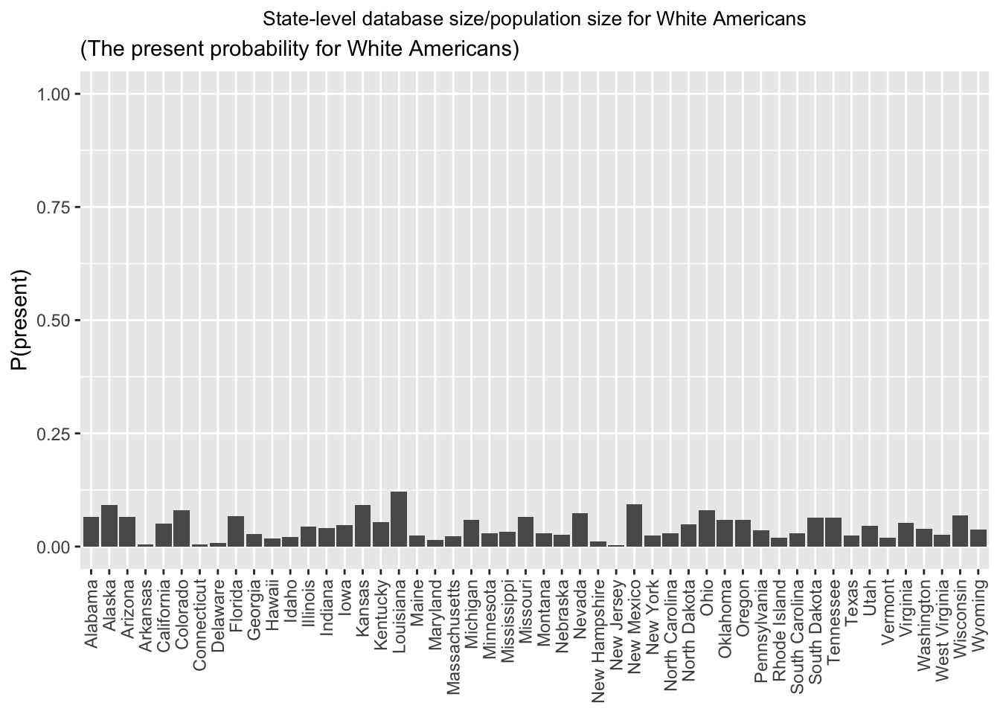
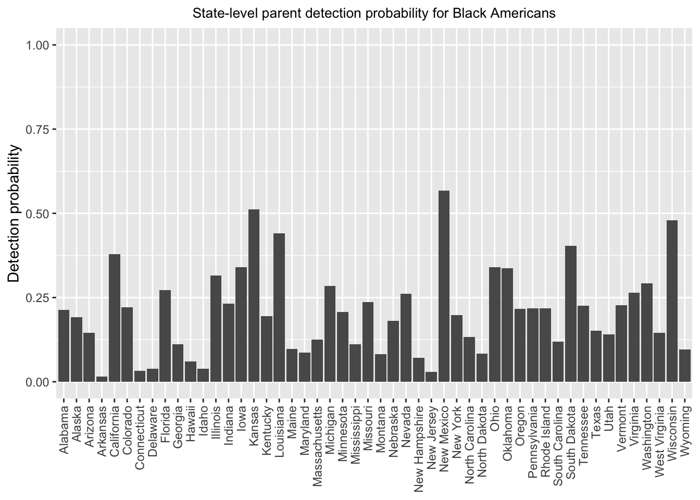
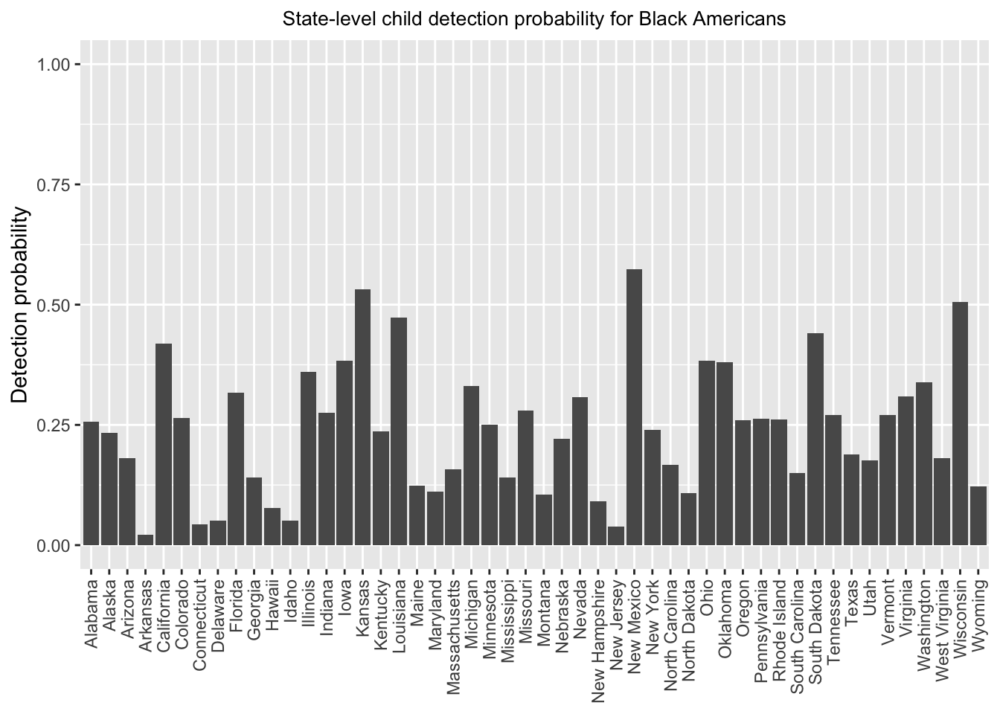
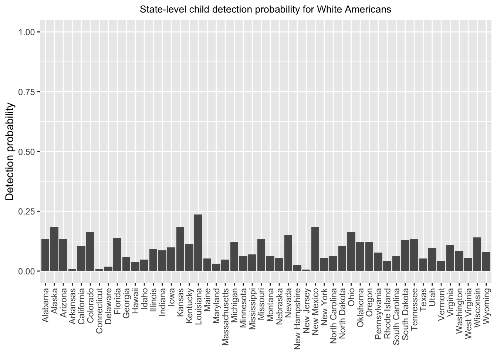
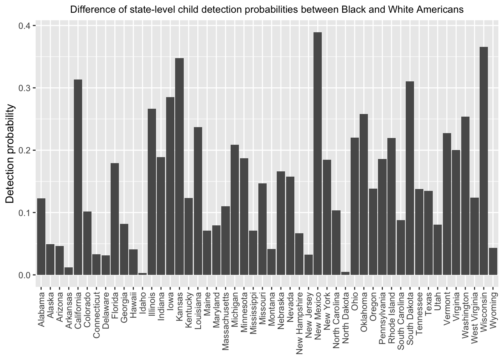

Disparities in Short-Range Familial Searches
Junhui He
2025-03-17
Last updated: 2025-03-17
Checks: 7 0
Knit directory: PODFRIDGE/
This reproducible R Markdown analysis was created with workflowr (version 1.7.1). The Checks tab describes the reproducibility checks that were applied when the results were created. The Past versions tab lists the development history.
Great! Since the R Markdown file has been committed to the Git repository, you know the exact version of the code that produced these results.
Great job! The global environment was empty. Objects defined in the global environment can affect the analysis in your R Markdown file in unknown ways. For reproduciblity it’s best to always run the code in an empty environment.
The command set.seed(20230302) was run prior to running
the code in the R Markdown file. Setting a seed ensures that any results
that rely on randomness, e.g. subsampling or permutations, are
reproducible.
Great job! Recording the operating system, R version, and package versions is critical for reproducibility.
Nice! There were no cached chunks for this analysis, so you can be confident that you successfully produced the results during this run.
Great job! Using relative paths to the files within your workflowr project makes it easier to run your code on other machines.
Great! You are using Git for version control. Tracking code development and connecting the code version to the results is critical for reproducibility.
The results in this page were generated with repository version 27674d2. See the Past versions tab to see a history of the changes made to the R Markdown and HTML files.
Note that you need to be careful to ensure that all relevant files for
the analysis have been committed to Git prior to generating the results
(you can use wflow_publish or
wflow_git_commit). workflowr only checks the R Markdown
file, but you know if there are other scripts or data files that it
depends on. Below is the status of the Git repository when the results
were generated:
Ignored files:
Ignored: .DS_Store
Ignored: .Rhistory
Ignored: .Rproj.user/
Untracked files:
Untracked: analysis/racial_proportion_v2.Rmd
Untracked: data/regression_data/CODIS_predicted_racial_proportions.csv
Untracked: data/regression_data/CODIS_predicted_total_number.csv
Unstaged changes:
Modified: PODFRIDGE.Rproj
Modified: analysis/racial_proportion.Rmd
Modified: analysis/regression.Rmd
Modified: data/final_CODIS_data.csv
Note that any generated files, e.g. HTML, png, CSS, etc., are not included in this status report because it is ok for generated content to have uncommitted changes.
These are the previous versions of the repository in which changes were
made to the R Markdown (analysis/short-range-disparity.Rmd)
and HTML (docs/short-range-disparity.html) files. If you’ve
configured a remote Git repository (see ?wflow_git_remote),
click on the hyperlinks in the table below to view the files as they
were in that past version.
| File | Version | Author | Date | Message |
|---|---|---|---|---|
| Rmd | 27674d2 | Junhui He | 2025-03-17 | modify short range disparity |
| html | f113246 | Junhui He | 2025-03-06 | Build site. |
| Rmd | f3842a3 | Junhui He | 2025-03-06 | update the short-range report |
| html | 1e31647 | Junhui He | 2025-03-01 | Build site. |
| Rmd | 8872204 | Junhui He | 2025-03-01 | modify short-range-disparity report |
| html | e711b4e | Junhui He | 2025-02-22 | Build site. |
| Rmd | a67a613 | Junhui He | 2025-02-22 | update short-range-disparity |
| html | bd3ef15 | He Junhui | 2025-02-17 | Build site. |
| Rmd | a233b4f | He Junhui | 2025-02-17 | create short-range disparity report |
1 Objective
We aims to examines disparities in the probability of detecting an individual through short-range familial searches using forensic DNA databases for Black and White Americans. This analysis integrates forensic database sizes, forensic database representation (from Result 1), family size distributions (from Result 2), and considers different levels of true positive rates in determining a familial relationship of a particular kind.
2 Model assumptions
The population size is \(N\), and the racial proportion of the population is \(\alpha\).
The database has \(K\) individuals, and the racial proportion of the database is \(\beta\). For a given race, the database is randomly sampled from the current population. Both the population proportion \(\alpha\) and the database proportion \(\beta\) are considered fixed constants.
The family trees of different races are strictly separated. For instance, the parents and siblings of black Americans are black Americans, while the parents and siblings of white Americans are white Americans.
The distribution of the children number is estimated based on the distribution of the number of children born to women aged 40-49 in 1990.
The distribution of the sibling number is estimated based on the distribution of the number of children born to women aged 50-59 in 1990. In particular, the frequency of siblings is calculated as \(freq_{n_{sib}} = freq_{mother} * chborn_{num}\).
All states in US follow the same distribution of children and sibling numbers.
In the short-range familial search, we only consider the parent-kids and full siblings for relationship detection.
All relatives involved are included in the same population as the individual. For example, if a person lives in Michigan, their parents and siblings also live in Michigan.
3 Hypothesis testing in determining a familial relationship with forensic STR loci
The short-range familial search utilizes a hypothesis testing to determine a familial relationship of a particular kind. Specifically, for a pair of individuals, consider the following null and alternative hypothesis: \[H_0:\text{unrelated pairs}\leftrightarrow H_1: \text{exist a certain familial relationship}.\] The kinds of familial relationship involved in short-range familial search contain the individual, parents and full siblings.
When the alternative hypothesis is accepted, there is supposed to exist a certain kind of relationship between the pair of individuals, and we call it a positive test. There are two possibilities for a positive test:
- False positive: The two individuals are unrelated in fact, but the test claims they are related mistakenly.
- True positive: The two individuals are related and the test detects their relationship correctly.
In this analysis, we denote the True Positive Rate as TPR, and denote the False Positive Rate as FPR. The short-range familial search conducts a likelihood ratio test (LRT) to detect the relationship. The performance of LRT will depend on many factors, including the familial relationshiop considered in the test, the number of STR loci, population allele frequency differences and cutoff thresholds. See Result 4 for further discussions.
4 The detection probability
4.1 Definition
Before our formal derivation, we have to define the concept of a detection. A detection, or a match is the decision that we accept the alternative hypothesis in the likelihood ratio test. Consequently, a detection is equivalent to a positive test. A detection contains two possible cases: (1) correct detection, corresponding to true positive; (2) incorrect detection, corresponding to false positive.
4.2 Derivation
We give a step-by-step derivation for the detection probability in a database.
For any random person, the probability of the event {A person is present in a database} is \(P(present)=\frac{\beta K}{\alpha N}\), where \(K\) is the database size, \(N\) is the population size, \(\beta\) and \(\alpha\) and racial proportions in the database and population.
Suppose the individual has \(n\) relatives. The probability of the event {\(r\) relatives present in the database | \(n\) relatives} is \(Bin(r;n,P(present))={n \choose r} P(present)^r(1-P(present))^{n-r}\).
Suppose \(r\) relatives are present in the database, then \(K-r\) unrelated people are present in the database. The number of correct detection and incorrect detection in the database follows \(Bin(r, TPR)\) and \(Bin(K-r, FPR)\), respectively. Thus, the probability of the event {at least one detection | \(r\) relatives present in the database, \(K-r\) unrelated people present in the database} is \(1 - (1-TPR)^r(1-FPR)^{K-r}\).
For a given short-range familial relationship, the probability of the event {at least one detection of a certain relationship} is \[P(at~least~one~detection~of~a~certain~relationship)=\\\sum_{n=1}^{n_\max}P(n~relatives)\sum_{r=0}^nBin(r;n,P(present))\{1 - (1-TPR)^r(1-FPR)^{K-r}\}.\]
The probability of the event {at least one detection} is \[1-\prod_{i=1}^{i_\max}(1-P(at~least~one~detection~of~relationship~i)).\]
5 Experimental Setting
We focus on short-range familial search in the United States, and will calculate the detection probabilities for Black and White Americans state-by-state.
Our analysis examines how family size distributions, database representation and true/false positive rate influence the probability of detecting an individual in a database.
5.1 Family size distributions
The distributions of number of children and siblings are given in the following figures, where White American shown on left (negative values), Black American on right (positive values).

5.2 Database representation
We use Census data as the population, and use CODIS data as the forensic database. In particular, we run regression to predict the number of people in CODIS by state and race. The state-level population and forensic database size by race is given as follows:
| State | census.total | census.black | census.white | codis.total | codis.black | codis.white |
|---|---|---|---|---|---|---|
| Alabama | 4767326 | 1296162 | 3220452 | 360000.000 | 146742.2511 | 209620.572 |
| Alaska | 643867 | 21898 | 435392 | 71893.895 | 2206.6346 | 39949.701 |
| Arizona | 6154696 | 339150 | 4322337 | 495103.159 | 25483.5890 | 280512.427 |
| Arkansas | 2797949 | 453783 | 2114512 | 12221.000 | 3580.4744 | 8514.105 |
| California | 33777988 | 2237044 | 16296122 | 2768269.000 | 473373.9990 | 819407.624 |
| Colorado | 5066044 | 234828 | 4082927 | 499170.000 | 27583.8604 | 329236.365 |
| Connecticut | 3273040 | 388675 | 2395128 | 20000.000 | 6360.4522 | 10641.602 |
| Delaware | 913430 | 218899 | 597763 | 9499.641 | 4214.2481 | 5197.489 |
| Florida | 17986115 | 3246381 | 12422961 | 1350667.000 | 475434.7840 | 829309.538 |
| Georgia | 9968000 | 3320513 | 5555483 | 347145.000 | 188994.7076 | 151062.666 |
| Hawaii | 1087142 | 23417 | 333261 | 28214.550 | 710.7176 | 5701.499 |
| Idaho | 1685901 | 15726 | 1510360 | 39000.000 | 303.5099 | 33048.945 |
| Illinois | 11667524 | 1808271 | 7868227 | 689297.000 | 311180.1618 | 348148.271 |
| Indiana | 6348802 | 648513 | 5241795 | 307714.000 | 80005.6400 | 215399.800 |
| Iowa | 3011086 | 131972 | 2694521 | 156631.522 | 24799.0490 | 126928.305 |
| Kansas | 2657373 | 168809 | 2222462 | 257451.104 | 50839.6910 | 203948.698 |
| Kentucky | 4260996 | 362417 | 3711254 | 240134.321 | 37173.7786 | 200813.408 |
| Louisiana | 4384380 | 1464023 | 2657652 | 699618.000 | 368290.6550 | 322836.083 |
| Maine | 1297649 | 25752 | 1237041 | 32847.000 | 1281.0330 | 30482.016 |
| Maryland | 5695323 | 1820472 | 3007874 | 126045.313 | 80168.2634 | 43019.213 |
| Massachusetts | 6421050 | 494029 | 4896037 | 175161.522 | 32148.3735 | 110325.448 |
| Michigan | 9442016 | 1376579 | 7444974 | 654142.623 | 212337.9215 | 436272.461 |
| Minnesota | 5360773 | 398434 | 4423146 | 180000.000 | 43749.3371 | 130168.714 |
| Mississippi | 2850547 | 1084481 | 1658893 | 118000.000 | 62017.1570 | 54263.231 |
| Missouri | 5741742 | 699840 | 4740335 | 400000.000 | 88133.7975 | 308372.927 |
| Montana | 1012950 | 5484 | 916524 | 32284.000 | 228.6695 | 27304.886 |
| Nebraska | 1817341 | 96535 | 1538052 | 54736.739 | 9192.4968 | 39974.882 |
| Nevada | 2670605 | 304739 | 1588463 | 167726.000 | 42937.8560 | 116401.844 |
| New Hampshire | 1299787 | 20127 | 1216203 | 15393.452 | 722.5766 | 13607.847 |
| New Jersey | 8385500 | 1219770 | 5112280 | 32696.000 | 17801.4510 | 13122.535 |
| New Mexico | 1695276 | 45904 | 1078937 | 137791.026 | 15718.2484 | 99923.039 |
| New York | 18433786 | 2986172 | 11143349 | 696443.925 | 310148.6267 | 280780.173 |
| North Carolina | 9727667 | 2140217 | 6488459 | 350000.000 | 147996.2471 | 192976.031 |
| North Dakota | 737154 | 26783 | 645938 | 41485.921 | 1151.8924 | 32027.576 |
| Ohio | 11118076 | 1478781 | 9080688 | 1015392.481 | 276829.3194 | 728038.606 |
| Oklahoma | 3451195 | 289961 | 2514885 | 226494.285 | 53729.7777 | 148300.940 |
| Oregon | 3793917 | 82655 | 3169096 | 230533.267 | 9511.3245 | 186615.466 |
| Pennsylvania | 12228216 | 1423169 | 9750687 | 530243.413 | 165136.1824 | 350359.644 |
| Rhode Island | 995585 | 62168 | 782920 | 27818.000 | 7190.5216 | 15269.301 |
| South Carolina | 4820049 | 1280531 | 3243442 | 175629.000 | 78666.0457 | 94920.924 |
| South Dakota | 840002 | 17842 | 715336 | 67600.000 | 4056.0000 | 45156.800 |
| Tennessee | 6497942 | 1092948 | 4990938 | 456494.008 | 131551.7704 | 321353.746 |
| Texas | 24011767 | 3552997 | 14609365 | 960985.000 | 279646.6350 | 358447.405 |
| Utah | 2992603 | 40058 | 2573413 | 149326.204 | 2926.1364 | 116733.989 |
| Vermont | 606051 | 9034 | 577751 | 12941.760 | 1089.4961 | 11546.709 |
| Virginia | 7925686 | 1607581 | 5208856 | 509009.000 | 228481.7900 | 272787.878 |
| Washington | 6868622 | 307565 | 5130920 | 272000.000 | 48944.4573 | 204569.887 |
| West Virginia | 1708772 | 65813 | 1610749 | 47444.000 | 4944.1882 | 42241.396 |
| Wisconsin | 5534184 | 376256 | 4737545 | 433943.146 | 104925.8859 | 323498.798 |
| Wyoming | 533378 | 5232 | 488374 | 21364.895 | 256.8106 | 18218.686 |
Furthermore, we show the present probability for Black and White Americans in the following figure.


5.3 True/False positive rate
The relationship between true and false positive rate is super complex in short-range familial search. It could depend on the hypothesis type, the likelihood cutoff, the number of STR loci, the race and so on. See Likelihood Ratio Distribution for an overview.
In this analysis, we consider a special case of true/false positive rates. For parent-child hypothesis, TPR is set to 1 and FPR is set to 0.01%. For full-sibling hypothesis, TPR is set to 75% and FPR is set to 1%.
6 Results
In this section, we present State-level estimated detection probabilities.
6.1 Detection probability versus present probability
6.2 Total detection probability
6.3 Parent, child, full sibling detection probability

| Version | Author | Date |
|---|---|---|
| f113246 | Junhui He | 2025-03-06 |
| Version | Author | Date |
|---|---|---|
| f113246 | Junhui He | 2025-03-06 |
| Version | Author | Date |
|---|---|---|
| f113246 | Junhui He | 2025-03-06 |

| Version | Author | Date |
|---|---|---|
| f113246 | Junhui He | 2025-03-06 |

| Version | Author | Date |
|---|---|---|
| f113246 | Junhui He | 2025-03-06 |

| Version | Author | Date |
|---|---|---|
| f113246 | Junhui He | 2025-03-06 |
7 Conclusions
- The detection probability for Black Americans is higher than that for White Americans in most states. This is because (1) Black Americans have mildly more children and siblings than White Americans, and (2) Black Americans are overrepresented while White Americans are underrepresented in the forensic database.
R version 4.4.2 (2024-10-31)
Platform: aarch64-apple-darwin20
Running under: macOS Sequoia 15.3.2
Matrix products: default
BLAS: /Library/Frameworks/R.framework/Versions/4.4-arm64/Resources/lib/libRblas.0.dylib
LAPACK: /Library/Frameworks/R.framework/Versions/4.4-arm64/Resources/lib/libRlapack.dylib; LAPACK version 3.12.0
locale:
[1] en_US.UTF-8/en_US.UTF-8/en_US.UTF-8/C/en_US.UTF-8/en_US.UTF-8
time zone: America/Detroit
tzcode source: internal
attached base packages:
[1] stats graphics grDevices utils datasets methods base
other attached packages:
[1] ggpubr_0.6.0 ggplot2_3.5.1 workflowr_1.7.1
loaded via a namespace (and not attached):
[1] tidyr_1.3.1 sass_0.4.9 utf8_1.2.4 generics_0.1.3
[5] rstatix_0.7.2 stringi_1.8.4 digest_0.6.37 magrittr_2.0.3
[9] evaluate_1.0.1 grid_4.4.2 fastmap_1.2.0 rprojroot_2.0.4
[13] jsonlite_1.8.9 processx_3.8.4 whisker_0.4.1 backports_1.5.0
[17] Formula_1.2-5 ps_1.8.1 promises_1.3.2 httr_1.4.7
[21] purrr_1.0.2 fansi_1.0.6 scales_1.3.0 jquerylib_0.1.4
[25] abind_1.4-8 cli_3.6.3 rlang_1.1.4 cowplot_1.1.3
[29] munsell_0.5.1 withr_3.0.2 cachem_1.1.0 yaml_2.3.10
[33] tools_4.4.2 ggsignif_0.6.4 dplyr_1.1.4 colorspace_2.1-1
[37] httpuv_1.6.15 broom_1.0.7 vctrs_0.6.5 R6_2.5.1
[41] lifecycle_1.0.4 git2r_0.35.0 stringr_1.5.1 car_3.1-3
[45] fs_1.6.5 pkgconfig_2.0.3 callr_3.7.6 pillar_1.9.0
[49] bslib_0.8.0 later_1.4.1 gtable_0.3.6 glue_1.8.0
[53] Rcpp_1.0.13-1 xfun_0.49 tibble_3.2.1 tidyselect_1.2.1
[57] rstudioapi_0.17.1 knitr_1.49 farver_2.1.2 htmltools_0.5.8.1
[61] labeling_0.4.3 carData_3.0-5 rmarkdown_2.29 compiler_4.4.2
[65] getPass_0.2-4